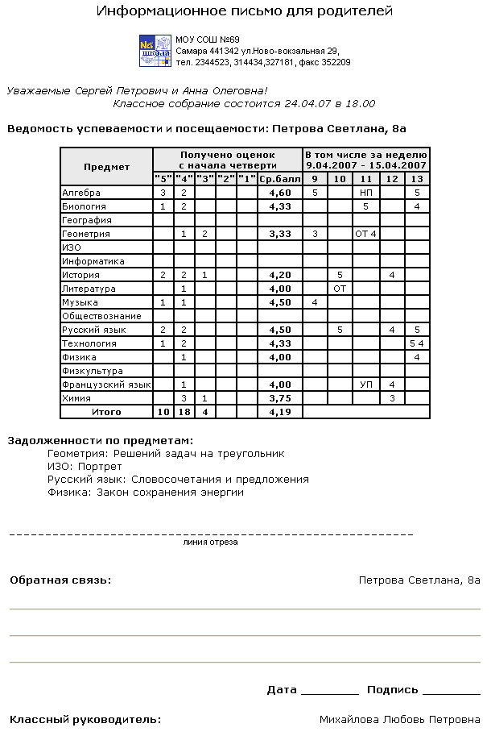

Этот отчет позволяет получить сводную статистику по оценкам и пропускам ребенка за последнюю неделю и с начала учебного периода. "Информационное письмо" - удобный способ оповещения родителей даже в случае, когда у них нет возможности входить в "Сетевой Город" через Интернет. Отчет можно распечатать для одного ученика или сразу для всех учеников класса.
В режиме "Все ученики класса" отчёт можно легко разослать всем родителям и учащимся выбранного класса. Каждый учащийся получит только отчёт о своей успеваемости и посещаемости; каждый родитель получит отчёт только о своём ребёнке.
Отчет включает следующую информацию:
| 1. | Информация о школе: логотип (тот же, что выводится в левом верхнем углу в "Сетевом Городе"; можно подменить на логотип своей школы), полное название школы, ее адрес, телефон, факс.
|
| 2. | Обращение к родителям (например, "Уважаемые ...").
|
| 3. | Произвольная текстовая информация (например, список общешкольных и классных мероприятий, объявления администрации школы и т.д.).
|
| 4. | Ведомость успеваемости и посещаемости ребенка: средние баллы по предметам с начала четверти (в левой части таблицы) и все текущие оценки за указанную неделю (в правой части таблицы).
|
| 5. | Задолженности по предметам - это темы заданий, обязательных, но не выполненных учеником, т.е. точки в журнале, за учебный период формирования отчета (т.е. за четверть, полугодие и др.).
|
| 6. | Имя и фамилия ученика и комментарии родителей в свободном формате (заполняются вручную).
|
| 7. ФИО классного руководителя.
|
Пример отчёта (для случая Текущие оценки за период):

Замечание 1. Секция Задолженности по предметам не выводится, если для отчета выбран прошлый учебный период (прошлая четверть, прошлый учебный год). Причем к "долгам" относятся только задания, срок выполнения которых истек (т.е. их срок выполнения раньше текущей даты).
Замечание 2. В столбце "Средний балл" выводится либо среднее арифметическое, либо средневзвешенное текущих оценок, в зависимости от настройки школы "Способ усреднения оценок". Это позволяет более объективно оценить уровень успеваемости.
Замечание 3. В качестве произвольной текстовой информации в отчет можно включить любую собственную информацию в формате html. Для этого можно
отредактировать файл <папка_установки_системы>\Web\asp\CustomData\ParentInfoLetter.html.
По умолчанию его размер 0 байт (внимание! удалять этот файл нельзя!). Пользователь сам отвечает за корректность html-разметки в этом файле, "Сетевой Город" проверить его корректность не может. html-содержимое будет вставлено в отчет внутрь тега <BODY>, сразу после обращения к родителям.
Пример файла ParentInfoLetter.html:
| <DIV class=select align=center>
|
| <I>Классное собрание состоится 24.04.07 в 18.00 </I>
|
| </DIV>
|
| <PRE class=select>
|
| <I>
|
| Общешкольное собрание со состоится в актовом зале 25.04.07 в 18.00.
|
| Повестка для - школьная форма.
|
| Ульянова Г.А.
|
| </I>
|
| </PRE>
|
Рекомендуемые элементы разметки для файла ParentInfoLetter.html:
| <I>...</I> - курсив
|
| <B>...</B> - полужирный
|
| <DIV>...</DIV> - новый абзац или параграф
|
| align - форматирование абзаца:
|
| align=center - по центру
|
| align=left - по левому краю
|
| align=justify - по ширине
|
| <PRE>...</PRE> - форматирование задается пользователем самостоятельно
|
| class - стиль оформления заголовка
|
| class=select Уважаемые Сергей Петрович и Анна Олеговна!
|